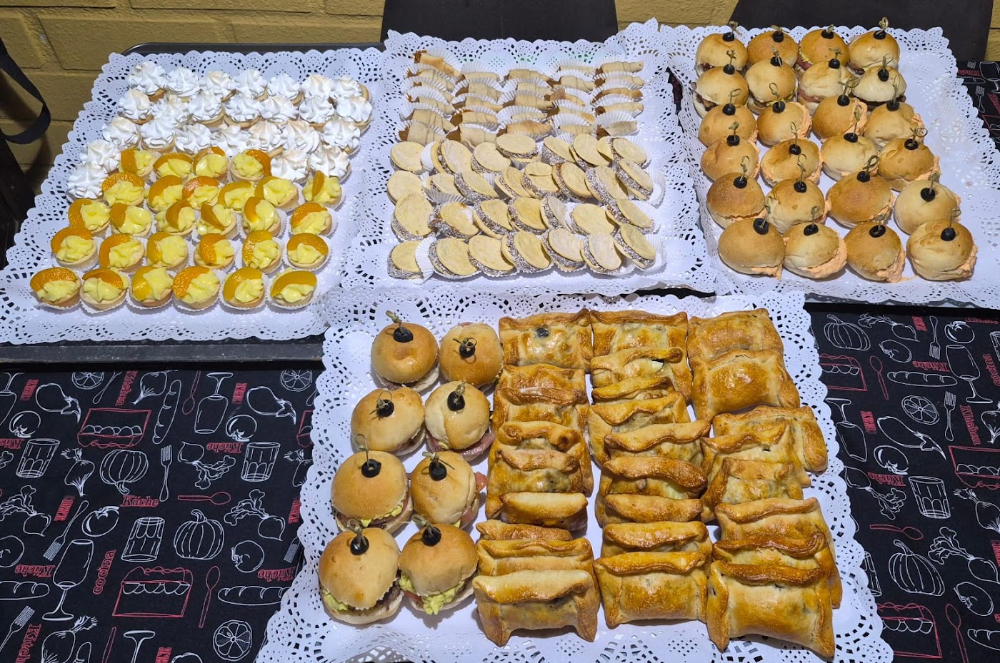
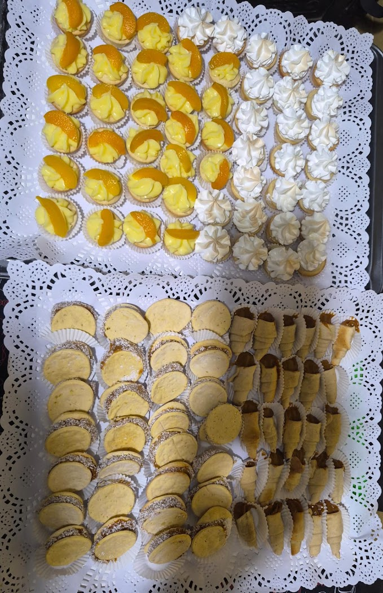

Tortas artesanales
"Muy ricas sus tortas, artesanales de verdad, con harto relleno y muy bonitas" — cita textual de una reseña real.

Tortas artesanales y bocadillos · San Bernardo
Tortas, bocadillos y mesas dulces por encargo en Baquedano 2033. Con harto relleno y todo fresquito.
"Tortas" es la palabra más repetida en sus opiniones.
"Muy ricas sus tortas, artesanales de verdad, con harto relleno y muy bonitas" — cita textual de una reseña real.
Bandejas completas de bocadillos dulces y salados para eventos, fotografiadas por ellos mismos.
"Todo fresquito y con ingredientes de muy buena calidad", dice una reseña. Otra lo resume: "muy buen servicio, 10/10".
DeliciasJose hace tortas artesanales, bocadillos y mesas dulces en Baquedano 2033, San Bernardo. Bandejas para eventos, tortas de cumpleaños y pastelería del día.
Tienen 4.4 estrellas y sus reseñas más recientes son de hace uno y dos meses — están trabajando ahora. Suben fotos nuevas seguido: las últimas son de hace once días.

Arma tu pedido y consúltanos. Los productos que ves acá son los que se identifican en sus propias fotos y en sus reseñas reales.
"Muy ricas sus tortas, artesanales de verdad, con harto relleno y muy bonitas."
"Muy ricas las tortas y pasteles. Muchas gracias: todo fresquito y con ingredientes de muy buena calidad."
"Muy buen servicio, 10/10. Todo muy limpio, buena calidad de productos y muy ricos."
—